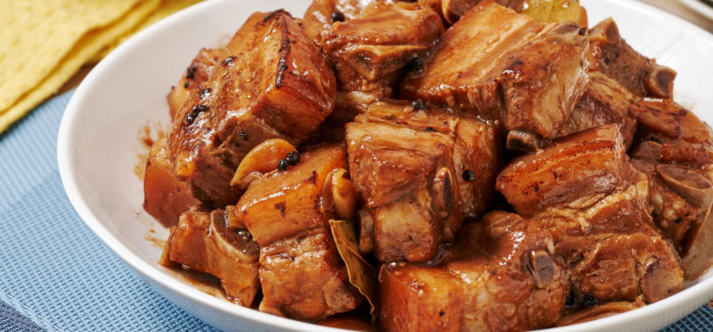

Pord Adobo

Description
Pork Adobo is a flavorful Filipino dish made with tender pork, soy sauce, vinegar, and spices.
This collection brings you easy recipes and helpful tips to make this classic meal at home, perfect for any occasion.
Ingredients
- Pork belly
- Garlic
- Dried bay leaves
- Vinegar
- Soy sauce
- Peppercorn
- Water
- Salt
Steps
- Combine the pork belly, soy sauce, and garlic then marinade for at least 1 hour
- Heat the pot and put-in the marinated pork belly. Cook this all up for a few minutes
- Pour the remaining marinade including the garlic.
- Add water, whole peppercorn, and dried bay leaves. Then bring your mixture to a boil. Simmer for 40 minutes to 1 hour
- Put the vinegar inside and simmer for 12 to 15 minutes
- Add salt to taste
- Serve hot. Share and enjoy!
Home